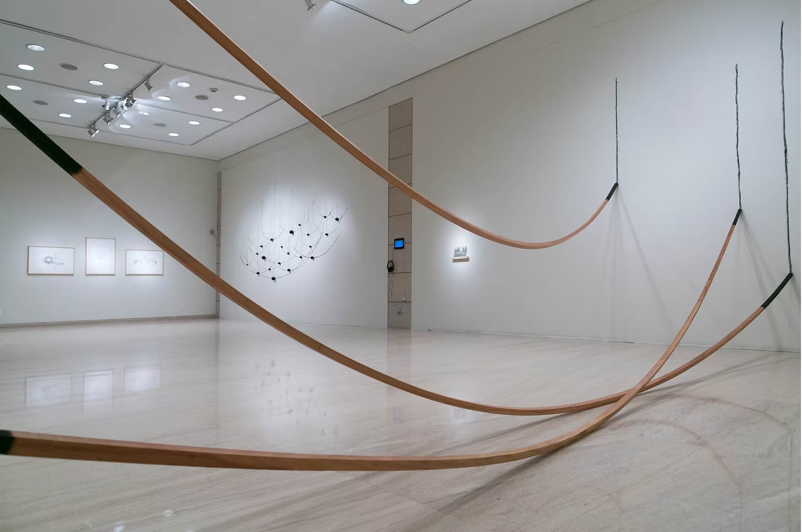
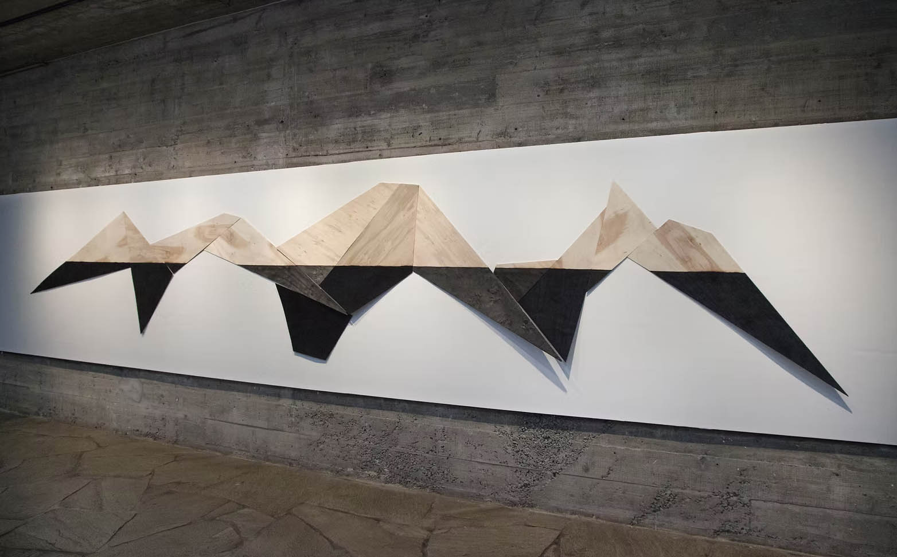
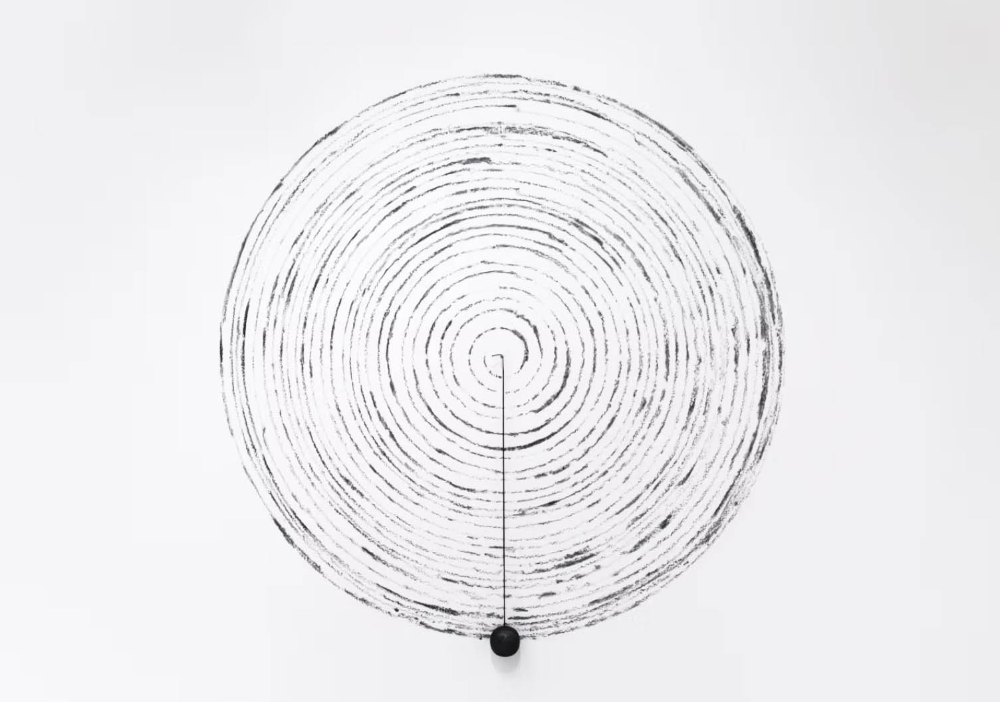

ARTE CONCEITUAL

SOBRE O TRABALHO
A pesquisa se desenvolve por meio da experimentação com elementos naturais e industriais que são transformados, reorganizados e submetidos a novos procedimentos. Em alguns trabalhos peças de madeira são carbonizadas transformando o carvão em parte constitutiva de desenhos e instalações. A linha, real ou imaginária, atravessa a produção como elemento capaz de unir ou dividir, criar fronteiras ou caminhos. O movimento, real ou sugerido, também integra essa investigação, estabelecendo relações entre matéria, forma e espaço. Entre desenhos, objetos e instalações se busca a síntese e novas possibilidades de leitura a partir da experimentação, transformação e significado. Trabalhos exibidos e premiados em exposições individuais e coletivas no Brasil e no exterior.
Conheça mais no site www.tchelo.art.br e no Instagram @tchelox

